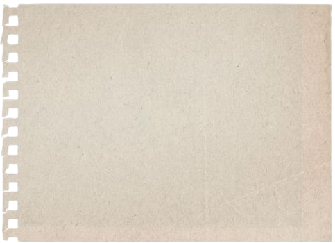
things i liked about barcelona
- the street art, there were so many beautiful works throughout the city. this
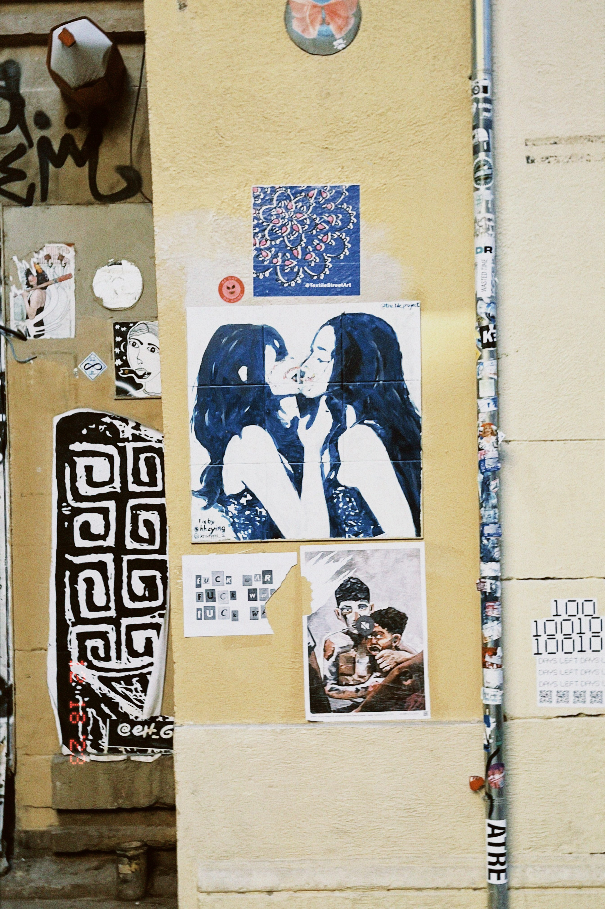
particular work was positioned next to a larger kiss mural comprised of thousands of smaller tiles with photographs of personal moments sent in from random people. i liked the blue tile painting because it appears to be clearly painted by an actual person so it felt more intimate; it's been through multiple fixes simply from random artists after people have destroyed the work by drawing dicks over it presumably with homophobic intent and i think it tells a certain simple story of resilience and love
- whatever gaudi was doing. i liked seeing his work because it was full of colourful painted tiles and stained glass and those are the things i absolutely must have in my house when i'm older. i was worried about sagrada familia being a shitty tourist trap but it definitely wasn't, (but we did have lunch at a shitty tourist trap restaurant just outside the cathedral) the inside was so incredible, esp the stained glass windows which exploit the natural light to beautifully illuminate the cathedral. crazy what people managed to do in the name of religion. only downside was that at one point my nose started bleeding
- montserrat. we spent the day visiting their monastery (again, crazy what people managed to do in the name of religion) then hiking up the mountains (i did this in a miniskirt and legwarmers because i was anticipating little stone stairs not steep rocky slopes) which was honestly such a fun journey and so worth it for the views
- the chocolate croissants in our hotel, and the hotel itself, which was situated in central barcelona and had pretty architecture that my mother didn't like (terracotta flooring, warm dim lighting & a dark green tiled bathroom)
- the christmas lights at night, the city seemed so alive at night moreso than during the day and there were so many interesting people which often left me in a state of sonder. it made me decide that i really fucking love big cities and that i definitely would like to live in one at some point when i'm older. building on this i thought that barcelona in particular had really good city planning regarding walkability and public transport in comparison to other major cities ive visited eg. london.
- improved my relationship with my parents
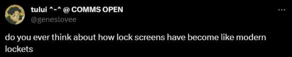
2024
in:
hedonism,
carefully picked perfumes,
cocktails,
utilising emojis including memojis,
critical thinking and media literacy,
reading/writing long form media,
colorful or patterned tights,
philomena cunk,
arguing and discourse,
lego but big architectural sets not the little cutesy sets,
music theory,
dark desaturated purples/blues/greens, bjork
out:
the conservative party,
hello kitty,
arthritis,
nietzche,
daily "little treat" culture,
timothee chalamet,
t*ylor swift,
synthetic furs and leather,
formula 1 and cars in general especially elon musk and his fuckass ugly cybertruck,
xl bullies and other big angry looking slobbering dogs,
thatcherism, lana del rey's lyricism
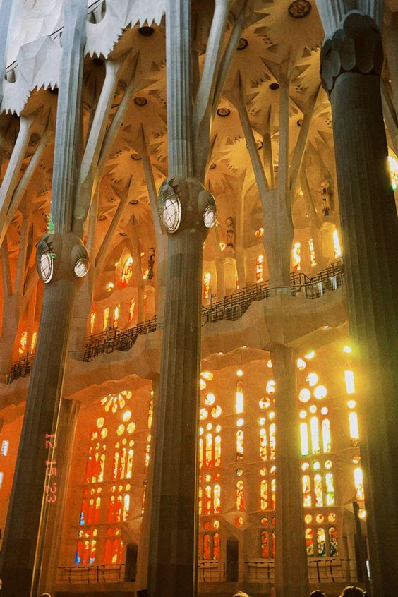
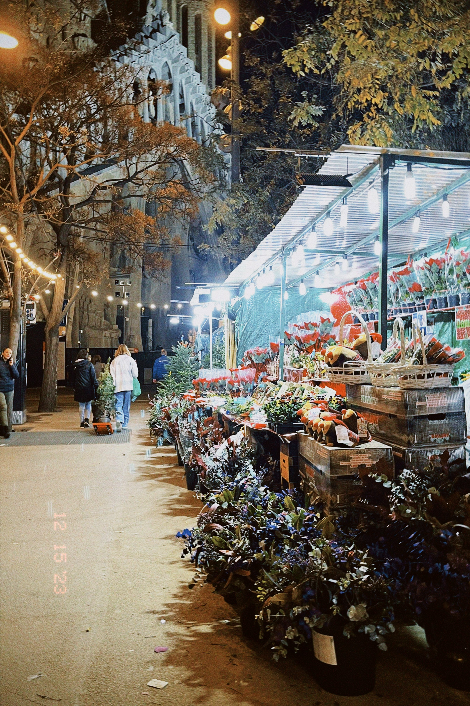
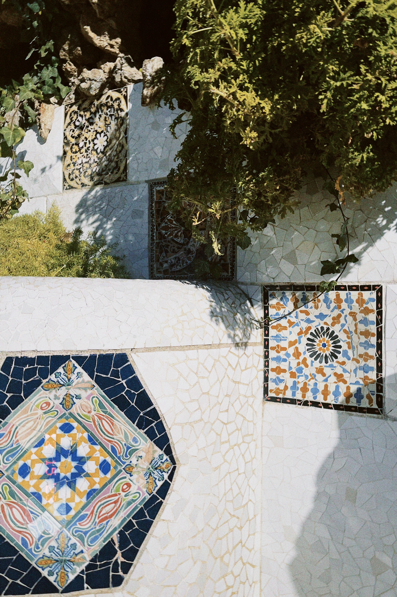
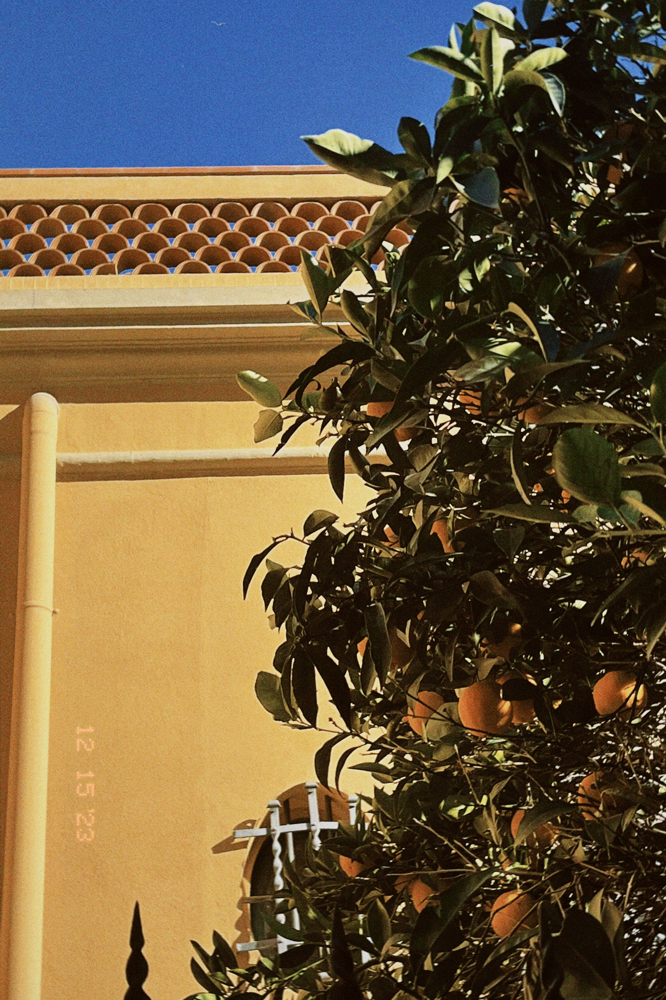
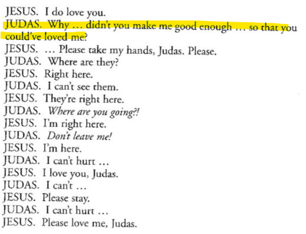
an excerpt from the last days of judas iscariot
other happenings
- a mildly alarming level of rotting. picked up crochet and gel nail art
- * interview. interesting and odd experience but surprisingly enjoyable
- film night!
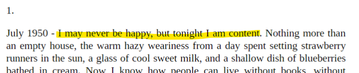
i picked up a copy of sylvia plath's journal in a bookshop after reading various excerpts online and read the first ten or so pages and have been thoroughly convinced to read the entire thing
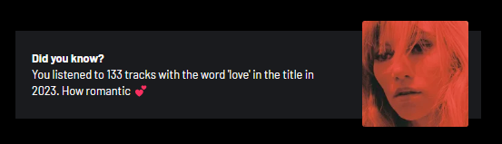
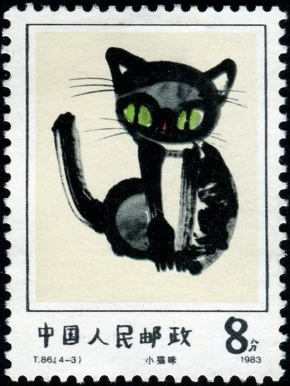
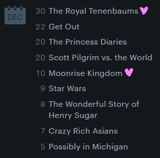
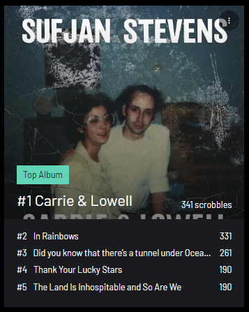
for the third year in a row, i finished the year off with writing a ten page letter to myself reflecting on the past year but also on the upcoming one too.
i was too sick (spent the majority of the day curled up in bed playing the nyt crossword) to go to my friend's nye party so i stayed at home and watched the fireworks with my family at night.
2024 will definitely be a year of some of the biggest changes in my life (university and moving out) but i hope it is kind to me.
brief snapshots of time in the latter half of 2023 through a collection of quotes, lyrics, excerpts and stray thoughts relating to whatever was going on in my life on that particular date
20/01/24 "...he is a boy who will die young. He will drown on this planet in the steady current of the deep, dirty, magnificent river that flows night and day through the veins and arteries of his own ancient city."
19/01/24 why peel an orange when you can peel a honey pomelo
07/01/24 ouroboros is one's constant scrutiny of oneself
01/01/24 it seems as though you are trying to craft a perfect and immortal legacy out of the messy and complicated realities of being a creature clinging onto a rock in space
31/12/23 here's to love and art and all of the secrets of the universe
26/12/23 microblogging will end up as the only solace, whilst our collective grasp on reality weakens with each technological advancement, narrating our experiences will be the last anchor proving to us that were are alive
24/12/23 why didnt you make me good enough so that you couldve loved me
23/12/23 wuthering heights to mothering nights
20/12/23 and yet we dance, we do, and we love
13/12/23 wasn't friendship its own miracle, the finding of another person who made the entire lonely world seem somehow less lonely?
12/12/23 being a lover girl in modern century is like being a salem witch in 1692
10/12/23 francoise hardy save me
08/12/23 i would die to taste the sweetness of all my figs; "I wanted each and every one of them, but choosing one meant losing all the rest" but in this universe they cannot all fall to the ground at my feet
05/12/23 and it all seems to come to a sudden abrupt end on a cold tuesday afternoon. what now?
03/12/23 the only god they worship is money
29/11/23 in the morning, through the window shade when the light pressed up against your shoulderblade i could see what you were reading
29/11/23 berkeley california son or burlington vermont daughter? (berkeley california daughter)
29/11/23 you pushed the rock up the mountain 57,782 times! you never made it to the top though... maybe next year!
25/11/23 fuck it we ball
25/11/23 FOR GOOD REASONS WITHOUT GRIEVANCE NOT FOR SPORT
25/11/23 i feel sick and my heart is weary again i feel like something was ripped out of me but i do not know what.. god i love being a teenage girl
24/11/23 thinking about 13 year old me visiting * with my parents but now it's become an actual possibility i can't believe this world is real
20/11/23 i always know i just always ignore it
19/11/23 let your world get bigger. The grief will get smaller in comparison, or, do karaoke; drink rum
19/11/23 putting mitski lana del rey and fiona apple together is insulting (to who, is redacted) and NOT valid those three belong in entirely different playlists. rot and burn
19/11/23 i hope this email finds you well. i am building a tunnel underneath your house
16/11/23 The answer to the hedgehog's dilemma isn't to curl up into a spiny ball and cry. i do not know what the answer is
15/11/23 1. untempted by sex 2. solitary 3. busy every minute 4. occupied half the time with philosophy; the other half with trivia 5. a service to others 6. self-absorbed 7. so still, no one can see you 8. so fast, everyone wants you 9. petrified 10. above suspicion
12/11/23 we're just there to be memories for our kids; i'm not afraid of death, i'm an old physicist - i'm afraid of time
11/11/23 the death of detail will be the death of human warmth; bring back intricate stained glass and patchwork feature tiles and rich mural wallpapers and life
11/11/23 american women are capitalists' wet dream
10/11/23 He'd carve out his section of the world it small as that might be and fight tooth and nail to keep it just the way he wanted
07/11/23 piazza new york catcher are you straight or are you gay
06/11/23 They couldn't touch him because he was Tarzan, Mandrake, Flash Gordon. He was Bill Shakespeare. He was Cain, Ulysses, the Flying Dutchman; he was Lot in Sodom, Deirdre of the Sorrows, Sweeney in the nightingales among trees. He was miracle ingredient Z-247
06/11/23 dancing queen (abba)
30/10/23 there's something calming about the mit integration bees i don't think i've ever been as emotionally invested in a competitive activity ever before. lee you i feel you i too am a frantic write every single thing in my brain down then confusedly try accumulate some sort of answer from that person
30/10/23 This is an elegy for concepts I conceived in deep sleep And I helplessly watch them fade while I awake I try and keep them alive Incomparable with life but eventually they die And the brain I used to cultivate reveals my lovers were a lie
28/10/23 I am Jack's wasted life. I am Jack's complete lack of surprise ... I am Jack's smirking revenge.
25/10/23 WITH THE LIGHTS OUT ITS LESS DANGEROUS HERE WE ARE NOW ENTERTAIN US i will never get tired of this
25/10/23 gut wrenching nostalgia thinking about the people and places i know i'll never see again and routines ill never go through again then; knowing i'll feel the same way about the present in a year or so (but i guess that means things have been good right) (but i can only thing of the most soul crushing things associated with those memories. but they still seem to be fond) (so every moment must be captured and recorded, somehow)
25/10/23 "I felt my lungs inflate with the onrush of scenery—air, mountains, trees, people. I thought, "This is what it is to be happy."
24/10/23 incels after crying about "male loneliness" and how hard it is to get a girlfriend when they refuse to let sunlight hit their skin and spend their days online for 20 hours hating on women and then sleeping in a cave thats breeding ten new types of bacteria
24/10/23 deep beneath the waves lilies of the day garden of remains diamond maiden chained
23/10/23 divine machinery; angels are axiomatic but in the way that singular train cars are public transport; silicon cities (2017); look at you, hacker, a pathetic creature of meat and bone. how can you challenge a perfect, immortal machine?
23/10/23 i like to go through my old social media accounts and see the preservation of my past self; how i changed so much from thirteen to fourteen then less as time went on. i hope to infinitely capture my soul
22/10/23 i am a box of poorly made goods with a disclaimer pasted on the outside i am a mosaic of all the people i love and admire around me. the moon really does whisper mean things
20/10/23 i wonder what pigeons dream about
20/10/23 the dying swan and the way the blades of grass lean on each other why am i here what am i doing with this
19/10/23 https://www.nasa.gov/missions/webb/nasas-webb-discovers-new-feature-in-jupiters-atmosphere/
18/10/23 a constant ringing thought of how do i tell my mother about this?
14/10/23 moon tell me if i could, send up my heart to you?
14/10/23 a certain hunger characterised by wanting more, more of everything, more more more. satisfaction is twelve letters, and not one of them is satisfying
12/10/23 me experiencing minor inconveniences during a state of heightened anxiety must be hilarious to watch
09/10/23 happy birthday to pj harvey
08/10/23 what neutralizes acid? Love
08/10/23 for good reasons, without grievance, not for sport
07/10/23 shout out to sufjan stevens "mysticism and godliness exist not in spite or because of pain/despair but simply alongside it, that the condition and nature of human love is to supersede both, that all you can ask for is the opportunity to try to reach for it"
07/10/23 just stumbled upon the most awful neocities site i thought it was a satirical site but apparently not. if you happen to be reading this god no fucking wonder you can't get a girlfriend i deeply pity you and anyone who ever crosses your path. i hope you get help
07/10/23 whatever happened to the girl i knew? (In the wasteland, come up short and end up on the news)
06/10/23 but we cannot simply sit and stare at our wounds forever
04/10/23 sometimes, mitski feels life would be easier without hope, or a soul, or love. but when she closes her eyes and thinks about what's truly hers, what can't be repossessed or demolished, she sees love.
02/10/23 THEY PERFORM THEIR LOVE FOR THAT GAZE.
01/10/23 sometimes, a drink feels like family
01/10/23 i hope october is kind to me
30/09/23 what the fuck are modular forms!
30/09/23 I THOUGHT HE WAS A MAN BUT HE WAS JUST A LITTLE BOY
30/09/23 life spirals and the game is rigged
28/09/23 so please, please, please, let me, let me, let me, let me get what i want this time
27/09/23 i can't remember a time where i wasn't afraid of something dreading something or anticipating something that had yet to arrive
26/09/23 feeling sin y - cos x = sin y^{2} - cos x^{2} atm
24/09/23 "making meaning outside of capitalistic modes of meaningfulness (productivity, success, wealth) while making meaning that is both meaningful to your individuality and at odds with hyper individualism"
24/09/23 i do not care about the roman empire i only care about love
23/09/23 there is no system of axioms which can embrace the whole of nature, or for that matter the whole of mathematics ... therefore cannot attain the great wish that we have had ever since the days of Thomas Hobbes and Newton: we will never be able to exhibit the whole of physics one fine day as a gorgeous system with a six axioms and a few operations
23/09/23 girl math is multiplying with roman numerals
22/09/23 it's life that matters, nothing but life—the process of discovering, the everlasting and perpetual process, not the discovery itself, at all
22/09/23 Do you know what a supernova is?
21/09/23 effort is a risky business, riskier than hoping or wanting something you can never have
19/09/23 It should be enough. To make something beautiful should be enough. It isn't. It should be
18/09/23 need a date so we can go as fiona apple and a paper bag for halloween
17/09/23 nothing hits harder than listening to ayesha erotica and zutomayo whilst integrating for an hour straight. would be even better if i could put spotify on 2x speed
16/09/23 ok but should we let catholics inside womens toilets
16/09/23 rousseau ate when he said "It is my test of character. There you have the despotic instinct of men. They do not like cats because the cat is free and will never consent to become a slave. He will do nothing to your order, as the other animals do."
15/09/23 it didn't last long
15/09/23 madness is no longer all i feel. feeling rather at peace right now but i fear this will not last long!
12/09/23 madness is, at this point, all i feel. delusion disguised by confidence and self worry. i've grown tired to always feeling this way. i can definitely say it's the violence keeping itself chained
11/09/23 you'll say you understand but you don't understand, you'll say you'd never give up seeing eye to eye, but never is a promise and you can't afford to lie
10/09/23 there is beauty in relating to others that individualism can't reach. we are far more similar than we are different
09/09/23 i wish i wrote the way i thought; obsessively, incessantly, with maddening hunger
07/09/23 art for art's sake.
06/09/23 this too will pass
05/09/23 'my unworthy useless self praises god in all his glory though i be but a horrid wretched sinner whos only hope be in the salvation of christ' they say in unison
05/09/23 why am i so wise? why am i so clever? why do i write such good books? why am i a destiny? - z
04/09/23 apparently there's more than one pope. crazy world we live in
03/09/23 a morbid longing for the picturesque at all costs
02/09/23 "live laugh love" - Karl Marx
01/09/23 it begins with a song. everything sings. the universe sings for you. the whole universe is humming, setting landmarks in the immeasurable flow of time. - kepler, some time in the 16th century
31/08/23 even if it may be fruitless i like the feeling of walking towards the mountain, the mountain of one day i might make a beautiful thing and i am unfathomably lucky for having this compulsion even if it spirals off into borderline madness and self pity and the depths of the valleys of the highlands
30/08/23 dostoevsky would have loved the smiths
29/08/23 i still crave summer but i crave summer five years ago
29/08/23 i have reason to believe that the cats in my neighborhood are plotting something. expect a major life update soon.
28/08/23 sisyphus was definitely into edging
27/08/23 and it feels like yesterday was a year ago
26/08/23 jealousy, turning saints into the sea
25/08/23 first as tragedy, then as tragedy
24/08/23 do not engage with me. i am better as a concept
23/08/23 i see you in the hallways and i see you as i rush around the corner and sometimes i think about you glimpses of you passing through my head for the briefest of moments
22/08/23 to what extent do economic factors underpin the social issues in society?
22/08/23 to love life, to love it even when you have no stomach for it
21/08/23 im a highschool lover, and you're my favourite flower
20/07/23 "male loneliness epidemic" shut the fuck up
17/08/23 another day passes
15/08/23 i believe that i am on earth to make art consume art and be art. the world is beautiful
13/08/23 what would sandy liang do?
10/08/23 god challenged me by adding seams to clothing
02/08/23 to dedicate your entire existence to your craft. to truly appreciate and understand, to master and manipulate
30/07/23 The proof is trivial and left as an exercise to the reader
29/07/23 nothing is more powerful than a girl with a sense of delusion
28/07/23 passion shining through their expression and their insatiable yearning to discover the seemingly irrelevant secrets of the universe the persistent seeking of answers
23/07/23 i'll worship like a dog at the shrine of your lies, i'll tell you my sins and you can sharpen your knife
19/07/23 real world application this real world application that shut the fuck up
10/07/23 all roads that lead to you as integral to me as arteries that pump the blood that flows straight to the heart of me
09/07/23 they say that the world was built for two, only worth living if somebody is loving you